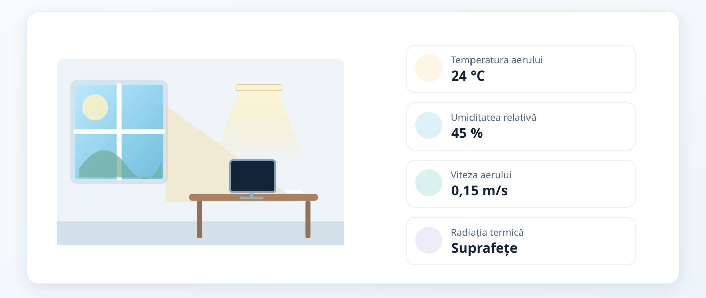
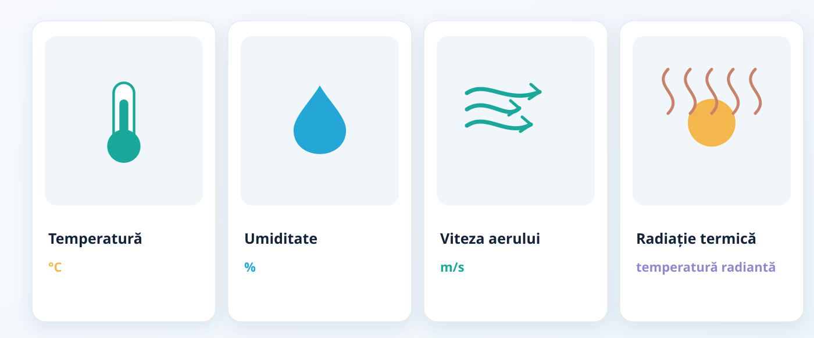
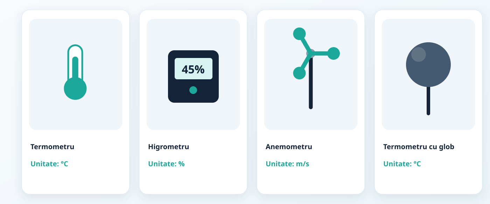
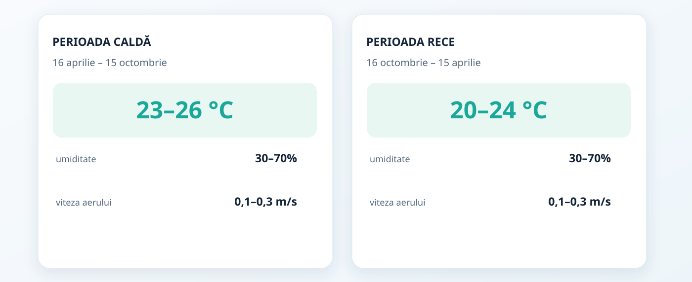
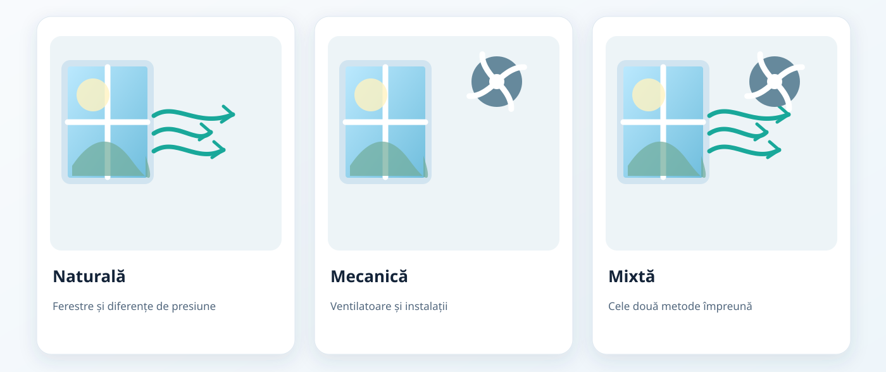
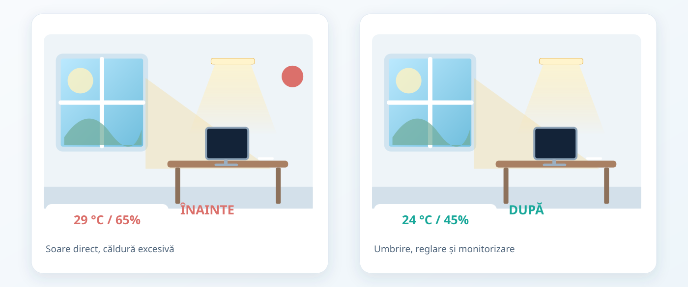

Igiena muncii și sanitația de producție
Noțiuni esențiale și parametrii microclimatului la locul de muncă — ce măsurăm, cu ce instrumente și ce spune normativul.
- Definești igiena muncii
- Explici sanitația de producție
- Numești cei patru parametri
- Interpretezi repere legale

Microclimatul se citește prin patru parametri măsurabili.
Ce este igiena muncii?
Igiena muncii este domeniul preocupat de anticiparea, recunoașterea, evaluarea și controlul factorilor din mediul profesional care ar putea afecta sănătatea lucrătorilor. Scopul său este prevenirea îmbolnăvirilor profesionale și îmbunătățirea condițiilor de muncă.
Obiective
- Identificarea factorilor nocivi.
- Evaluarea expunerii.
- Recomandarea măsurilor preventive.
- Protejarea sănătății.
- Supravegherea condițiilor de lucru.
Exemplu într-un birou
Sunt evaluate temperatura, umiditatea, zgomotul, iluminarea și calitatea aerului. Rezultatul nu este un diagnostic medical, ci o imagine a condițiilor în care se lucrează.
Pe baza acestei imagini se decid măsuri: ventilație, umbrire, întreținere, reorganizarea posturilor.
Ce este sanitația de producție?
Sanitația de producție reprezintă ansamblul măsurilor tehnice, organizatorice și igienico-sanitare prin care se previn sau se reduc expunerile dăunătoare din mediul de muncă.
Exemple concrete
- Curățenie și îndepărtarea prafului.
- Întreținerea instalațiilor sanitare.
- Ventilație adecvată.
- Controlul temperaturii și umidității.
- Prevenirea mucegaiului.
- Controlul surselor de zgomot și substanțe periculoase.
- Acces la apă potabilă.
Igienă versus sanitație
Factorii mediului de muncă
Factorii de risc se grupează în patru familii. Un loc de muncă poate cumula mai multe deodată.
Fizici
Temperatură, zgomot, vibrații, iluminare, radiații.
Exemplu: stres termic într-un atelier supraîncălzit.
Chimici
Gaze, vapori, pulberi, solvenți.
Exemplu: vapori de solvent fără extracție corespunzătoare.
Biologici
Microorganisme, mucegai, alte materiale biologice.
Exemplu: mucegai după infiltrații de apă.
Ergonomici și organizatorici
Poziții incomode, mișcări repetitive, efort și organizarea activității.
Exemplu: monitor prea jos și ședere prelungită.
Microclimatul și cei patru parametri termici
Microclimatul locului de muncă reprezintă condițiile fizice ale mediului termic care influențează schimbul de căldură între organism și mediul înconjurător. El se descrie prin patru parametri principali: temperatura aerului, umiditatea relativă, viteza curenților de aer și radiația termică (temperatura radiantă).
Confortul resimțit mai depinde de îmbrăcăminte și de intensitatea activității fizice — de aceea aceiași parametri pot fi resimțiți diferit de două persoane.

Temperatura aerului
Exprimă starea termică a aerului. Temperatura ridicată poate contribui la transpirație, oboseală, deshidratare și, în condiții severe, la afecțiuni provocate de căldură. Temperatura scăzută poate genera disconfort și reducerea dexterității.
Temperatura acceptabilă variază cu activitatea și sezonul.
Umiditatea relativă
Este raportul procentual dintre presiunea parțială a vaporilor de apă din aer și presiunea vaporilor la saturație, la aceeași temperatură.
Umiditatea foarte mare poate încetini evaporarea transpirației și favoriza condensul; umiditatea foarte mică poate favoriza uscăciunea ochilor și a mucoaselor.
Viteza aerului
Exprimă viteza de deplasare a aerului. Curenții de aer pot răcori organismul la temperaturi ridicate, însă pot produce disconfort dacă aerul este rece sau este direcționat direct spre angajați.
Radiația termică
Reprezintă schimbul de căldură prin radiație între corp și suprafețele din jur.
De exemplu, un angajat lângă un geam puternic însorit poate simți căldură chiar dacă temperatura aerului nu se modifică semnificativ.
De evidențiat. CO₂, praful și concentrațiile altor poluanți sunt importante pentru calitatea aerului, dar nu reprezintă cei patru parametri termici principali ai microclimatului.
Instrumente și unități de măsură
Fiecare parametru are instrumentul și unitatea lui. Nu se măsoară „confortul” în general, ci fiecare mărime separat.

| Parametru | Instrument | Unitate |
|---|---|---|
| Temperatura aerului | Termometru | °C |
| Umiditatea relativă | Higrometru / psihrometru | % |
| Viteza aerului | Anemometru | m/s |
| Temperatura radiantă | Instrumente de evaluare termică, inclusiv termometrul cu glob | °C |
Măsurările trebuie realizate în poziții reprezentative ale locurilor ocupate, ținând seama de diferențele în timp, înălțime și proximitatea surselor de căldură ori curenților de aer.
Valori normative pentru anumite birouri din Republica Moldova
Reperele de mai jos provin din HG nr. 353/2010 și se aplică unor categorii de posturi de lucru, nu oricărui loc de muncă.

Potrivit HG nr. 353 din 05.05.2010, anexa nr. 2, punctul 11, pentru anumite posturi de lucru (birouri, camere de comandă, încăperi cu videoterminale etc.) unde activitatea necesită confort termic sunt indicate condițiile următoare:
| Parametru | 16 aprilie – 15 octombrie | 16 octombrie – 15 aprilie |
|---|---|---|
| Temperatura aerului | 23–26 °C | 20–24 °C |
| Umiditatea relativă | 30–70% | 30–70% |
| Viteza medie a curenților | 0,1–0,3 m/s | 0,1–0,3 m/s |
Actul prevede și alte condiții, inclusiv diferența pe verticală a temperaturii sub 3 °C. Pentru munci fizice sau medii industriale se aplică alte criterii, în funcție de sarcină și metabolism.
Tabelul nu trebuie folosit ca „temperatură ideală universală” pentru orice loc de muncă. El descrie o categorie de posturi și două perioade ale anului.
Confortul termic și echilibrul organismului
Confortul termic este starea în care o persoană este mulțumită de condițiile termice. Organismul produce căldură prin metabolism și o transferă către mediu pe patru căi.
Convecție
Schimb de căldură cu aerul.
Radiație
Schimb cu suprafețele din jur.
Evaporare
Pierderea căldurii prin transpirație.
Conducție
Transferul de căldură prin contact direct.
Două persoane în aceeași încăpere se pot simți diferit, în funcție de îmbrăcăminte, activitate și percepție individuală.
Ventilația și calitatea aerului
Ventilația asigură aportul de aer proaspăt și evacuarea ori diluarea poluanților. Este o condiție importantă pentru un mediu sănătos.
- Naturală: schimbul de aer prin ferestre, grile, diferențe de presiune și temperatură.
- Mecanică: ventilatoare și instalații care introduc sau evacuează aer.
- Mixtă: combină cele două mecanisme.
Ventilație ≠ climatizare
Un aparat de aer condiționat poate răci aerul recirculat fără să introducă aer exterior. Ventilația și climatizarea nu sunt automat același lucru.

Efectele unui microclimat necorespunzător și măsuri de prevenire
| Problemă | Efect posibil | Măsuri preventive |
|---|---|---|
| Căldură excesivă | oboseală, stres termic, deshidratare | umbrire, răcire, hidratare, adaptarea sarcinilor |
| Frig excesiv | disconfort, dexteritate redusă | încălzire, izolare, îmbrăcăminte adecvată |
| Umiditate ridicată | disconfort, condens, condiții favorabile mucegaiului | eliminarea infiltrațiilor, ventilație, controlul umidității |
| Umiditate scăzută | uscăciunea mucoaselor, disconfort | monitorizare, corectarea condițiilor dacă este necesar |
| Curenți deranjanți | senzație de frig și disconfort local | reglarea direcției și vitezei gurilor de ventilație |
Simulator de microclimat
Modifică temperatura, umiditatea și viteza aerului. Intervalele de referință pentru birouri sunt marcate pe fiecare scală, cu sursa afișată.
HG nr. 353/2010, anexa nr. 2, pct. 11 — birouri, camere de comandă, încăperi cu videoterminale. Diferența pe verticală a temperaturii: sub 3 °C.
Valorile selectate se află în intervalul de referință pentru perioada caldă.
Simulatorul este demonstrativ. Nu calculează confort termic validat: lipsesc temperatura radiantă, îmbrăcămintea și metabolismul. Intervalele afișate provin din HG nr. 353/2010, anexa nr. 2, punctul 11, pentru categoria de birouri menționată.
Confort termic într-un birou cu șase angajați

Vara, biroul ajunge la 29 °C
Situația inițială
Într-un birou cu șase angajați, temperatura ajunge vara la 29 °C, umiditatea la 65%, iar ferestrele sunt expuse la soare direct.
Analiza
Temperatura este mai mare decât intervalul prevăzut pentru categoria de birouri relevantă în perioada caldă; radiația solară poate accentua senzația de căldură.
Măsuri propuse
Jaluzele sau umbrire, verificarea ventilației și climatizării, măsurarea periodică a temperaturii și umidității, asigurarea apei potabile.
Rezultat urmărit
Scăderea expunerii la căldură și obținerea unor condiții mai bune pentru lucrul la calculator. Scenariul „după” (24 °C, 45%) este ilustrativ.
Igiena muncii identifică și evaluează factorii nocivi, iar sanitația de producție aplică măsuri de prevenire. Microclimatul — temperatură, umiditate, viteza aerului și radiație termică — are un rol direct în confortul și sănătatea lucrătorilor. Monitorizarea parametrilor și adaptarea condițiilor la activitate ajută la crearea unui mediu de muncă sigur.
Test de verificare
Cinci întrebări cu feedback imediat și explicația fiecărui răspuns.